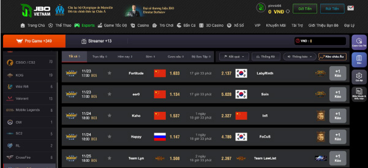

Hướng dẫn cách cá cược Warcaft 3 JBOVN dễ chơi dễ trúng
Lần cập nhật cuối: 20 Tháng Hai, 2024
Cá cược Warcaft 3 JBOVN là một trong những hình thức cá cược Esport được nhiều game thủ săn đón. Người chơi không chỉ trải nghiệm các ván game đối kháng vô cùng chân thực mà còn có cơ hội kiếm tiền cao. Hãy cùng trang chủ jboVN tìm hiểu chi tiết về hình thức cá cược này trong bài viết dưới đây để có thêm nhiều điều hữu ích nhé!
Giới thiệu tổng quát về cá cược Warcaft 3 JBOVN
Warcaft 3 là một trong những game được phát hành bởi Blizzard Entertainment – Thương hiệu trò chơi điện tử đến từ Mỹ. Tựa game này chính là một trong những dòng game chiến lược thời gian thực đình đám nhất. Khi tham gia, game thủ sẽ phải thực hiện các hoạt động, nhiệm vụ như: Nâng cấp quân đội, chặt cây, đào vàng, điều khiển quân đội… để đối đầu với những người chơi điều khiến hay đội quân máy khác.
Với cốt truyện chặt chẽ, Warcaft 3 được xem là phần thành công nhất của series game này. Đặc biệt, đây còn được xem là nguồn cảm hứng cho lối chơi của nhiều dòng game thể thao điện tử phổ biến hiện nay như Liên Minh Huyền Thoại, Dota 2… Cá cược Warcaft 3 JBOVN được biết đến là hình thức mà bet thủ sẽ tiến hành đặt cược đội thắng, thua ở mỗi trận đấu khi diễn ra. Nếu dự đoán đúng thì anh em sẽ nhận được tiền thưởng tương ứng ở mỗi cửa cược.Cá cược Warcaft 3 JBOVN là một hình thức cá cược Esport nhiều game thủ săn đón
Luật chơi cá cược Warcaft 3 JBOVN
Để tham gia chơi cá cược Warcaft 3 JBOVN thì anh em cũng không cần phải thực hiện nhiều điều quá phức tạp. Bởi luật chơi của loại hình giải trí này vô cùng đơn giản, dễ hiểu. Cụ thể, anh em chỉ cần dự đoán và đưa ra chọn lựa về cửa cược mà bản thân cho rằng sẽ chiến thắng. Nếu kết quả đúng với cửa cược của người chơi thì sẽ giành chiến thắng.
Tuy nhiên, để quá trình tham gia chơi được thuận lợi thì anh em cần nắm rõ về những cửa cược của trò chơi. Cụ thể đó là:Cược chấp
Đây là loại kèo cược rất phổ biến trong cá độ thể thao và thể thao điện tử Esport. Loại kèo cược này xuất hiện khi có sự chênh lệch về trình độ giữa hai đội trong trận đấu. Người chơi sẽ tiến hành đặt cược cho đội chiếm ưu thế hơn với đội mạnh sẽ chấp đội yếu một số điểm nhất định.
Tỷ lệ cược chấp của mỗi trận đấu sẽ do nhà cái quy định dựa trên những nhận định ban đầu về 2 đội. Thông thưởng tỷ lệ cược chấp của trò chơi này sẽ là các con số lẻ như 0.5, 0.75, 1.25,…Cược tài xỉu
Đối với hình thức đặt cược này, người chơi sẽ không cần quan tâm đội nào thắng chung cuộc. Người chơi sẽ đặt cược cho một trong hai đội thắng hay thua bao nhiêu trận và con số đó cao hay thấp hơn so với nhà cái đặt ra.
Ví dụ trong một kèo cược Warcaft 3 sẽ gồm có 30 ván đấu và nhà cái đưa ra con số là 16, người chơi sẽ đặt cược cho đội A. Khi đó, đặt cược cửa tài sẽ thắng nếu đội A thắng lớn hơn 16 trận, cửa xỉu thắng nếu đội A thắng ít hơn 16 trận.
Luật chơi cá cược Warcaft 3 JBOVN không quá khó hiểu
Cược theo hiệp
Như đã giới thiệu ở trên, trong một lượt thi đấu sẽ có nhiều hiệp đấu diễn ra, thông thường là 30 hiệp. Người chơi có thể tham gia đặt cược cho đội chiến thắng ở từng hiệp đấu như hiệp 1, hiệp 10, hiệp 15, hiệp cuối,…Người chơi có thể phân bổ và đặt cược tiền cho nhiều hiệp để nhận được nhiều thưởng nhất.
Cược đội thắng cuộc
Với loại kèo cược này thì người chơi sẽ lựa chọn đặt tiền cho đội có khả năng chiến thắng cao nhất. Xác suất chiến thắng của laoij kèo này là 50/50. Thông thưởng với những người chơi có kinh nghiệm thì sẽ ít lựa chọn cược loại kèo này mà thường thử sức ở cược chấp.
Một vào loại cược khác
Bên cạnh 4 loại kèo cược được nhiều người chơi lựa chọn kể trên thì nhà cái JBOVN còn cung cấp một số kèo cược nhỏ. Cụ thể như sau:
- Cược đội nào hạ được mạng đầu tiên
- Cược chính xác của tỷ số của trận đấu, số mạng hạ gục được
- Cược tổng số mạng mà một đội bất kỳ hạ được trong nửa hiệp đấu.
Cá cược Warcaft 3 tại JBOVN có nhiều loại kèo cược khác nhau
Cách chơi cá cược Warcaft 3 tại JBOVN
Để tham gia cá cược Warcaft 3 JBOVN, người chơi cần thực hiện theo các bước hướng dẫn đơn giản. Cụ thể như sau:
- Bước 1: Người chơi truy cập vào link chính thức của nhà cái JBOVN và tiến hành đăng nhập tài khoản. Nếu là người chơi mới vẫn chưa có tài khoản cá cược tại đây thì hãy tiến hành Đăng ký tài khoản.
- Bước 2: Tiến hành nạp tiền vào tài khoản để tham gia cá cược không bị gián đoạn. Anh em có thể nạp tiền thông qua liên kết ngân hàng, ví điện tử momo hoặc zalo pay, thẻ cào điện thoại,…
- Bước 3: Bet thủ nhấn chọn mục Thể thao điện tử E-sport và chọn nhà cung cấp. Sau đó, bạn hãy nhấn chọn vào trò chơi Warcaft 3.
- Bước 4: Lúc này màn hình sẽ hiện danh sách các trận đấu sắp diễn ra với thời gian cụ thể, người chơi chỉ cần theo dõi và tham gia cá cược vào đúng khung giờ của trận đấu mà mình muốn.
Cách chơi cá cược Warcaft 3 tại JBOVN rất dễ hiểu
Kinh nghiệm chơi cá cược Warcaft 3 JBOVN
Bên cạnh nắm rõ các loại kèo cũng như các bước tham gia chơi thì anh em cần biết một số kinh nghiệm cá cược Warcaft 3 JBOVN dễ thắng. Và những chiến thuật hay giúp bet thủ có thể thắng lớn khi cá cược game này được các cao thủ truyền tai nhau đó là:
Nắm chắc luật chơi và quy tắc đặt cược tại JBOVN
Để tham gia cá cược thắng lớn thì trước hết người chơi phải nắm rõ luật chơi cũng như các quy tắc đặt cược của game Warcaft 3. Bởi mỗi nhà cái sẽ có những quy định về tỷ lệ cược cũng như trả thưởng khác nhau. Do đó, nếu không tìm hiểu kỹ, người chơi sẽ dễ bị mất tiền oan.
Tham khảo qua lịch sử thi đấu của hai đội
Để người chơi có thể đưa ra quyết định đặt cược chuẩn xác nhất thì cần phải tìm hiểu thông tin của hai đội trong trận đấu trước khi đặt cược. Thế nên, anh em cần phải biết lịch sử thi đấu của hai đội, phong độ thi đấu gần đây,…
Kinh nghiệm chơi cá cược Warcaft 3 tại JBOVN là rất cần thiết với bet thủ
Câu hỏi liên quan đến cá cược Warcaft 3 JBOVN
Về cá cược Warcaft 3 JBOVN thì người chơi cũng khó tránh khỏi những thắc mắc đặt ra khi tìm hiểu. Và những câu hỏi mà nhiều anh em hiện nay đặt ra có thể kể đến như:
Những ai có thể chơi cá cược Warcaft 3 tại JBOVN?
Bất cứ ngươi chơi nào tại JBOVN cũng đều có thể tham gia cá cược Warcaft 3. Tuy nhiên, để có chiến thắng dễ dàng thì anh em cần tìm hiểu kỹ càng về luật chơi.
Chơi cá cược Warcaft 3 JBOVN khó không?
Nếu người chơi có sự tìm hiểu kỹ càng thì cá cược Warcaft 3 tại JBOVN hoàn toàn không phải là loại hình giải trí phức tạp. Thế nên, nếu yêu thích loại hình giải trí với trò chơi thể thao điện tử này thì anh em hãy mạnh dạn trải nghiệm nhé!
Lời kết
Trên đây là những thông tin về cá cược Warcaft 3 JBOVN hiệu quả. Hy vọng anh em sau khi tìm hiểu đã nắm cho bản thân nhiều kiến thức hữu ích nhất. Và bạn cũng đừng quên đăng ký JBOVN để có thể tham gia cá cược vào những trận đấu thể thao điện tử hấp dẫn của nhà cái nhé!
BÀI VIẾT MỚI NHẤT
Siêu Sao Bắn Cá JBOVN Hấp Dẫn Như Thế Nào?
Cách Chơi Bài Tấn & Thủ Thuật Chơi Cực Hay Ít Người Biết
Cách Chơi Bài Tam Cúc: Hướng Dẫn Từ A Đến Z Cho Người Mới
Thể thao điện tử – Sảnh cược đổi thưởng hấp dẫn tại nhà cái JBOVN
Hướng dẫn cách chơi Dice JBOVN dành cho tân thủ
Kèo rung – Tổng hợp thông tin từ A đến Z